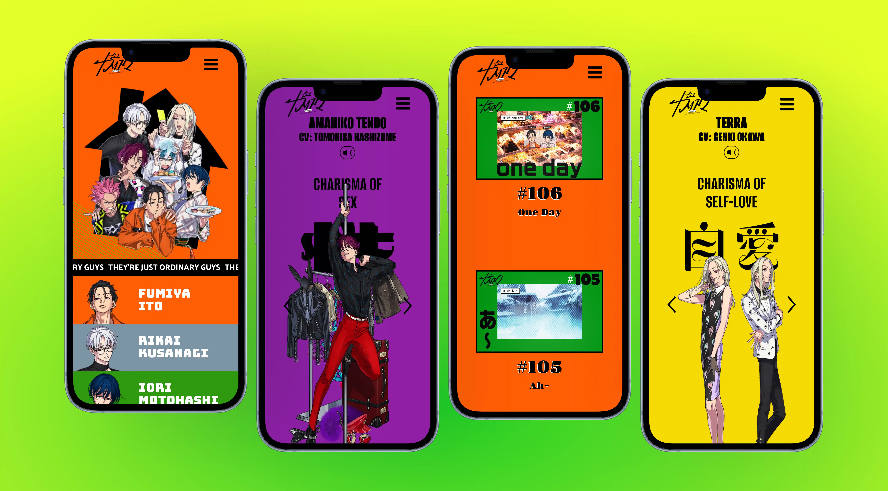
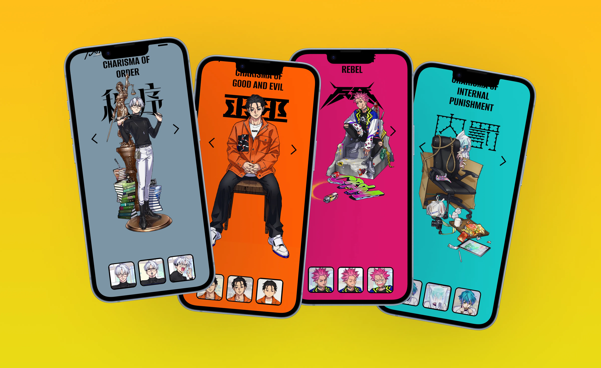
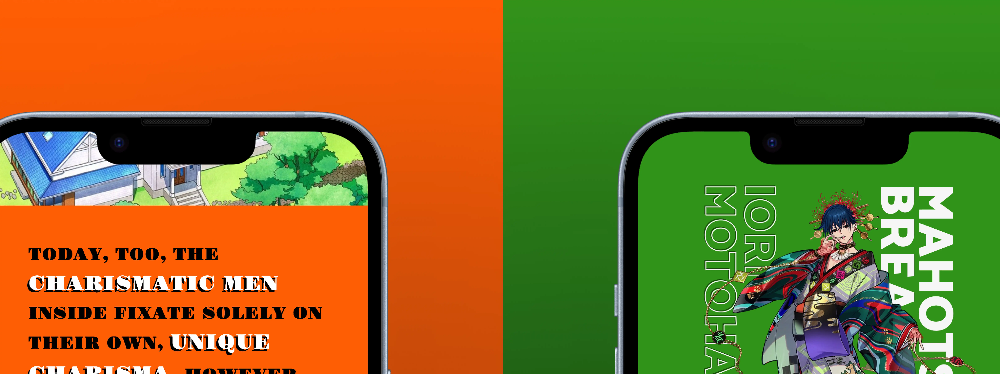

-
Charisma House Website Redesign
-
Web Design
-
Webflow, HTML, CSS, JavaScript
-
Objective
-
To create a website using Webflow.
-
About
-
Charisma House (カリスマ) is a Japanese music multimedia project, created by King Records under their EVIL LINE
RECORDS label. The characters were designed by Ebimo, with Shu Matsubara as the main scenario writer.
The project began on August 7, 2021, telling a story of 7 housemates living under one roof. The
series currently focuses on music and drama tracks. It also has two mangas, a stage play, and an upcoming anime.
-
Process
-
I began with low-fidelity designs in Figma, properly fleshing them out in desktop, tablet, and mobile views
before bringing my design into Webflow. For some aspects such as the marquees, I had to use custom code
since Webflow doesn't have animation tools.




